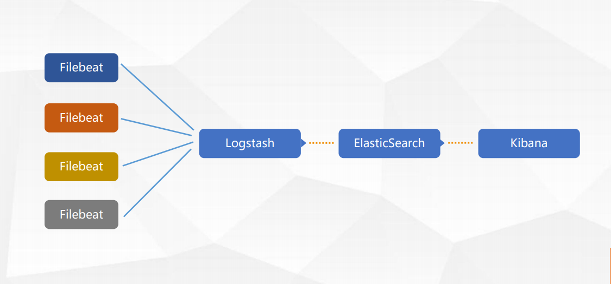
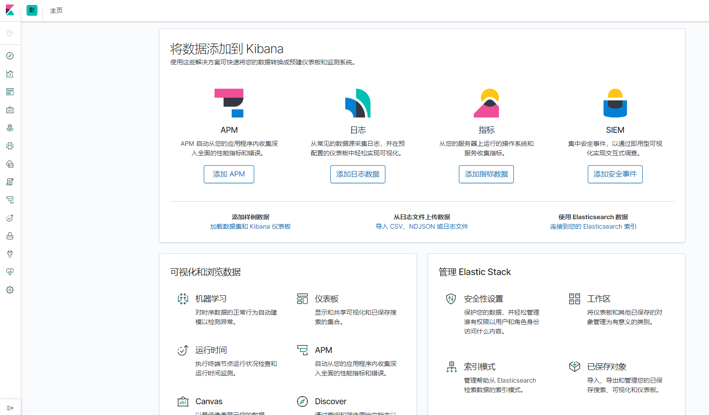
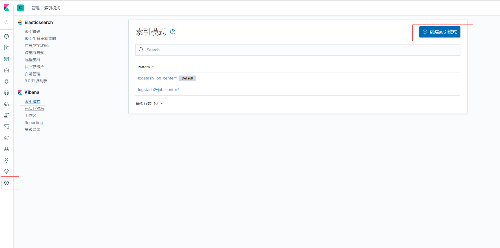
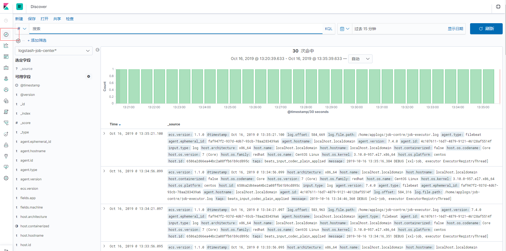

1.1. ELKF日志管理平台搭建
1.1.1. 一、整体架构简介

架构描述
Filebeat是一个轻量级日志传输Agent，通过Filebeat将项目日志传输至Logstash
Logstash对日志进行过滤，将过滤完的日志传输到ElasticSearch中进行持久化
Kibana通过查询不同的ElasticSearch中不同的索引来获取到不能模块的日志信息并展示在监控平台上
1.1.2. 一、安装Filebeat
1.下载Filebeat并上传至服务器/home/software目录
2.解压并重命名文件夹
[root@localhost /]# cd /home/software/
[root@localhost software]# tar -xvf filebeat-7.4.0-linux-x86_64.tar.gz
[root@localhost software]# mv filebeat-7.4.0-linux-x86_64 filebeat
3. 修改配置文件
[root@localhost software]# vim filebeat/filebeat.yml
filebeat.inputs:
- type: log
#更改为true以启用此输入配置
enabled: true
paths:
#修改系统日志所在位置
- /var/log/nginx/*.log
# to add additional information to the crawled log files for filtering
#配置索引名
fields:
machine: master
#应用名称
app: job-center
multiline.pattern: ^\[
multiline.negate: true
multiline.match: after
#此处filebeat.inputs可以配置多个
filebeat.config.modules:
path: ${path.config}/modules.d/*.yml
reload.enabled: false
setup.template.settings:
index.number_of_shards: 1
setup.kibana:
#-------------------------- Elasticsearch output ------------------------------
#output.elasticsearch:
# Array of hosts to connect to.
# hosts: ["localhost:9200"]
# Optional protocol and basic auth credentials.
#protocol: "https"
#username: "elastic"
#password: "changeme"
#----------------------------- Logstash output --------------------------------
#注释掉ElasticSearch output中内内容让它不直接输出到ElasticSearch
#修改Logstash output中的output.logstash.hosts为你的Logstash所在机器
output.logstash:
hosts: ["localhost:5044"]
processors:
- add_host_metadata: ~
- add_cloud_metadata: ~
4.启动/停止应用
[root@localhost filebeat]# nohup ./filebeat -e -c filebeat.yml &
#查看应用进程
[root@localhost filebeat]# ps -aux|grep filebeat
#杀死进程
[root@localhost filebeat]# kill -9 进程号
1.1.3. 二、安装Logstash
1.下载Logstash并上传至服务器/home/software目录
2.解压并重命名文件夹
[root@localhost /]# cd /home/software/
[root@localhost software]# tar -xvf logstash-7.4.0.tar.gz
[root@localhost software]# mv logstash-7.4.0 logstash
3. 修改配置文件
[root@localhost software]# vim logstash/config/logstash-sample.conf
# Sample Logstash configuration for creating a simple
# Beats -> Logstash -> Elasticsearch pipeline.
#beats.port配置接收Filebeat的数据的端口
input {
beats {
port => 5044
}
}
#output.elasticsearch配置在ElasticSearch中生成索引名的规则
output {
elasticsearch {
hosts => ["http://localhost:9200"]
#在ElasticSearch中生成索引名的规则[logstash-job-center-2019.10.16]
#这里通过生成不同的索引名来区分不同模块的日志文件
#Filebeat中配置fields.app
index => "logstash-%{[fields][app]}-%{+YYYY.MM.dd}"
#user => "elastic"
#password => "changeme"
}
}
这里的 filebeat.inputs 是可以定义多个的，每个 filebeat.inputs 对应一个微服务模块日志配置，我们可以在fields下面自定义一些属性，然后在logstash的配置文件中获取到这个自定义属性，通过判断自定义属性来对每个模块做个性化索引配置。
4.启动/停止应用
[root@localhost logstash]# nohup ./bin/logstash -f ./config/logstash-sample.conf &
#查看应用进程
[root@localhost logstash]# ps -aux|grep logstash
#杀死进程
[root@localhost logstash]# kill -9 进程号
5.错误处理记录
Thread.exclusive is deprecated, use Thread::Mutex
解决：在 logstash.yml 文件中找到 Data path 的路径(默认在安装目录的data目录下）
查看是否存在 .lock 文件，如果存在把它删除
[root@ELK1 data]# ls -alh
总用量 20K
drwxr-sr-x 4 tingshuo staff 4.0K 8月 19 11:42 .
drwxr-sr-x 14 tingshuo staff 4.0K 8月 19 11:42 ..
drwxr-sr-x 2 tingshuo staff 4.0K 8月 19 11:42 dead_letter_queue
-rw-r--r-- 1 tingshuo staff 0 8月 19 11:42 .lock
drwxr-sr-x 2 tingshuo staff 4.0K 8月 19 11:42 queue
-rw-r--r-- 1 tingshuo staff 36 8月 19 11:42 uuid
#删除带lock的文件
[root@ELK1 data]# rm .lock
1.1.4. 三、安装ElasticSearch
1.下载ElasticSearch并上传至服务器/home/software目录
2.解压并重命名文件夹
[root@localhost /]# cd /home/software/
[root@localhost software]# tar -xvf elasticsearch-7.4.0-linux-x86_64.tar.gz
[root@localhost software]# mv elasticsearch-7.4.0-linux-x86_64 elasticsearch
3. 修改配置文件
[elk@localhost elasticsearch]$ vim config/elasticsearch.yml
#如果配置集群，不同ElasticSearch节点的node.name和http.port需要保持唯一
cluster.name: my-app-1
node.name: node-1
network.host: 0.0.0.0
http.port: 9200
#取消注释保留一个节点
cluster.initial_master_nodes: ["node-1"]
4.非root用户启动设置
- 我们需要创建一个elk用户和组，因为ElasticSearch不能以root身份运行，否则将会报错，执行以下命令
#添加elk用户组
[root@localhost elasticsearch]# groupadd elk
#为用户组添加elk用户
[root@localhost elasticsearch]# useradd -g elk elk
#赋予权限
[root@localhost elasticsearch]# chown -R elk:elk /usr/local/elasticsearch
#启动es
[elk@localhost elasticsearch]$ /home/software/elasticsearch/bin/elasticsearch -d
#验证启动成功否、看到进程号就说明启动成功了
[elk@localhost elasticsearch]$ ps -aux|grep elasticsearch
5.启动/停止应用
#-d后台启动
[root@localhost elasticsearch]# /home/software/elasticsearch/bin/elasticsearch -d
#查看应用进程
[root@localhost elasticsearch]# ps -aux|grep elasticsearch
#杀死进程
[root@localhost elasticsearch]# kill -9 进程号
6.启动报错
[elk@localhost elasticsearch]$ ERROR: [3] bootstrap checks failed
[1]: max file descriptors [4096] for elasticsearch process is too low, increase to at least [65535]
[2]: max virtual memory areas vm.max_map_count [65530] is too low, increase to at least [262144]
[3]: the default discovery settings are unsuitable for production use; at least one of [discovery.seed_hosts, discovery.seed_providers, cluster.initial_master_nodes] must be configured
- 解决错误[1、2] 以root身份执行下面的脚本，执行后要重新登录普通账户启动ES
#!/bin/bash
echo "* soft nofile 65536">>/etc/security/limits.conf
echo "* hard nofile 65536">>/etc/security/limits.conf
echo "* soft memlock unlimited">>/etc/security/limits.conf
echo "* hard memlock unlimited">>/etc/security/limits.conf
echo "vm.max_map_count = 262144">>/etc/sysctl.conf
sysctl -p
ulimit -l unlimited
- 解决错误[3]
#取消注释保留一个节点
cluster.initial_master_nodes: ["node-1"]
7.验证
[elk@localhost elasticsearch]$ curl http://localhost:9200/
{
"name" : "node-1",
"cluster_name" : "my-app-1",
"cluster_uuid" : "7i63wZl1SPCbsuQCJjrK5g",
"version" : {
"number" : "7.4.0",
"build_flavor" : "default",
"build_type" : "tar",
"build_hash" : "22e1767283e61a198cb4db791ea66e3f11ab9910",
"build_date" : "2019-09-27T08:36:48.569419Z",
"build_snapshot" : false,
"lucene_version" : "8.2.0",
"minimum_wire_compatibility_version" : "6.8.0",
"minimum_index_compatibility_version" : "6.0.0-beta1"
},
"tagline" : "You Know, for Search"
}
1.1.5. 四、安装Kibana
1.下载Kibana并上传至服务器/home/software目录
2.解压并重命名文件夹
[root@localhost /]# cd /home/software/
[root@localhost software]# tar -xvf kibana-7.4.0-linux-x86_64.tar.gz
[root@localhost software]# mv kibana-7.4.0-linux-x86_64 kibana
3. 修改配置文件
server.port: 5601
#这里需要需改为实际IP，否则外部浏览器无法访问
server.host: "192.xxx.xxx.xxx"
#汉化
i18n.locale: "zh-CN"
4.启动/停止应用
#后台启动
[elk@localhost kibana]$ nohup ./bin/kibana &
#查看应用进程
[root@localhost kibana]# ps -aux|grep kibana
#杀死进程
[root@localhost kibana]# kill -9 进程号
5.Kibana设置
- 访问浏览器：http://172.20.25.71:5601

- 管理-->索引模式-->创建索引模式

- 在Discover查看我们刚刚建立的索引规则匹配到的索引数据，如图所示
